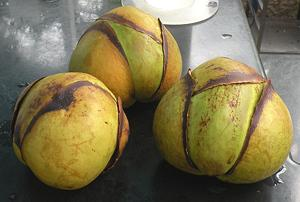
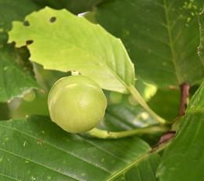
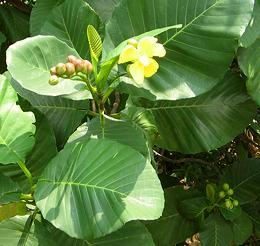

Magnolias

SAFARI
Users
Elephant Apple
 [Owtenga, Chulta, Chalta, Ouu (India); Dillenia indica]
This plant, native to Southeast Asia, from northeast India through Thailand and Malaysia to Indonesia. It ranges from shrub to medium size tree, almost 50 feet high. The nearly spherical fruit, which ranges from 2 to 5 inches diameter, is sour-bitter and fibrous. It is used in India, with grated coconut, to make a chutney, and also in curries, jams and jellies. In Assam state it is used in dal and fish recipes.
In India, This fruit is not grown commercially, and selling it is
illegal, as is gathering it in certain core forests. This is to preserve
it as food for elephants, monkeys and deer, as it is critical to their
survival.
Photo taken at Huntington Botanical Gardens in Los Angeles
(San Marino), California.
Katmon
 [Dillenia philippinensis]
This tree, native to the Philippines, grows to almost 50 feet
high. The nearly spherical fruit, which ranges from 2 to 3 inches
diameter, is edible, and called "Elephant Apple". It is a popular plant
for home gardens in the Philippines but is IUCN rated VU (Vulnerable)
in the wild. It grows well in the Philippine lowlands, but the uplands
are too cold for it.
Photo of immature Katmon Fruit by MarvinBikolano
distributed under license Creative Commons
Attribution Share-Alike v4.0 International.
Simpoh Ayer
 [Dillenia suffruticosa]
This shrub is native to Sri Lanka and tropical Southeast Asia.
The fruit is small and not of much interest to humans but is eaten by
birds and monkeys. The large leaves are used in Malaysia and Indonesia
to wrap Tempeh (fermented soybean cake) and rolled into a cone to contain
Rojak Salad and other items sold by street vendors
Photo by Yosri distributed under license
Creative Commons
Attribution-NonCommercial 2.0 Generic.